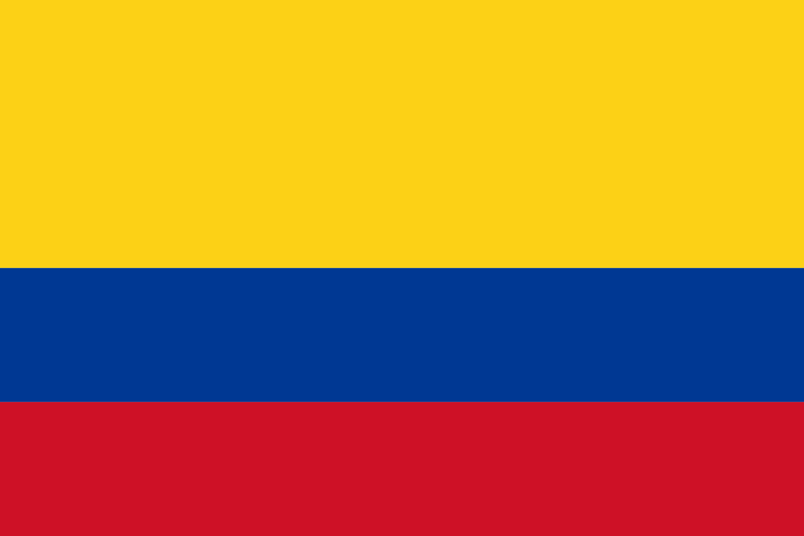

Country Tips

Argentina
- Landscape: Diverse geography – Andes in the west, Pampas (flat grasslands) in the center,
subtropical forests in the north, and arid Patagonia in the south. Urban areas like Buenos Aires are flat with
a grid-like street layout.
- Street View Coverage: Extensive. Good coverage in cities, towns, major highways, and even
remote parts of Patagonia.
- Road Signage:
- National routes: Marked as "RN" + number (e.g., RN9)
- Provincial roads: "RP" + number / down on tip of south america its "RP" + letter (e.g., RP-A, RP-B)
- City streets often use "Calle" (street), "Avenida" (avenue).
- Driving Side: Right.
Brazil
- Landscape: Huge country with rainforests (Amazon), highlands, beaches, and urban
megacities. North is rainforest-heavy, while the south and southeast are more developed and urbanized.
- Street View Coverage: Excellent in urban areas and main highways. Lower coverage in Amazon
and rural parts of the northeast.
- Road Signage:
- Federal highways: "BR" + number (e.g., BR-116), usually on green signs.
- State roads: Vary by state, e.g., SP for São Paulo, MG for Minas Gerais.
- City streets use "Rua", "Avenida", "Travessa".
- Driving Side: Right.

Chile
- Landscape: Long narrow strip with deserts in the north (Atacama), Mediterranean climate
around Santiago, and alpine forests + fjords in the south.
- Street View Coverage: Good along Route 5 (Panamericana), major cities, and some rural
towns. Remote areas like Patagonia are less covered.
- Road Signage:
- Main routes: "Ruta" + number (e.g., Ruta 5).
- Smaller roads: A-XXX - Z-XXX (e.g. A-101, C-101, X-92).
- Driving Side: Right.

Colombia
- Landscape: Mountainous Andes in the west, Amazon basin in the southeast, Caribbean and
Pacific coasts. Urban areas often in valleys or high plateaus.
- Street View Coverage: Strong in and around cities like Bogotá, Medellín, Cali, and along
main roads. Patchy in jungle regions.
- Road Signage:
- National routes: "RN" or just route numbers (e.g., 25, 40), sometimes "Autopista Medellín-Bogotá"
(highway between Medellín and Bogotá)
- Urban roads marked with "Carrera", "Calle", "Avenida".
- Driving Side: Right.

Peru
- Landscape: Desert coast, Andes mountains in the center, Amazon jungle in the east. Coastal
cities like Lima are dry and flat.
- Street View Coverage: Good along the Panamericana and major urban centers. Limited in
high-altitude and jungle areas.
- Road Signage:
- Main highways: "PE" + number (e.g., PE-1N, PE-3S).
- You can also see them named after region (e.g. JU-106, LM-116)
- Panamericana route visible with road shields.
- Driving Side: Right.

Uruguay
- Landscape: Rolling hills and grasslands, no mountains. Generally rural with a few urban
centers like Montevideo.
- Street View Coverage: Strong nationwide – nearly all towns and highways covered.
- Road Signage:
- Routes marked "Ruta" + number (e.g., Ruta 1).
- Urban roads typically use "Calle", "Avenida".
- Driving Side: Right.
Bolivia
- Landscape: Altiplano plateau, Amazon jungle, and Andes mountains. Urban areas like La Paz
and Sucre are located in mountainous terrain.
- Street View Coverage: Very limited. Only a few cities like La Paz, Cochabamba, and Santa
Cruz have partial coverage. Vast rural areas are uncovered.
- Road Signage:
- National roads: "Ruta" + number (e.g., Ruta 1).
- City roads marked as "Calle", "Avenida".
- Driving Side: Right.

Ecuador
- Landscape: Divided into coastal lowlands, Andes mountains, and Amazon rainforest. Quito is
high-altitude; Guayaquil is coastal and tropical.
- Street View Coverage: Good in main cities and some highways. Spotty in rural Amazon or
remote mountain towns.
- Road Signage:
- Highways: Often marked with "E" + number (e.g., E35, E20).
- City roads: "Calle", "Avenida".
- Driving Side: Right.
Guatemala
- Landscape: Mountainous country with volcanoes, tropical forests, and highland villages.
Pacific coastal plain in the south.
- Street View Coverage: Present in major cities like Guatemala City and Antigua, and along
important roads. Rural coverage is spotty.
- Road Signage:
- Highways: CA (Central America) routes like CA-1.
- You can also see them named afgter region (e.g. QUI-1, ESC-05, SM-4)
- City streets: "Calle", "Avenida".
- Driving Side: Right.

Panama
- Landscape: Tropical, with coastal lowlands and a central mountain range. Urbanized canal
zone around Panama City.
- Street View Coverage: Extensive around the canal zone, major highways like the Pan-American
Highway, and major cities.
- Road Signage:
- Main highways: Part of the Panamericana (CA-1) and national routes marked with just a number (e.g., 5).
- City roads: "Calle", "Avenida", "Transversal".
- Road signs often include both Spanish and English text.
- Driving Side: Right.